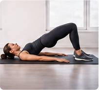

An adaptable learning guide
The Postpartum Recovery Roadmap
Explore broad recovery phases and the goals that may become relevant over time. These are not fixed deadlines or a prescribed exercise program.

Phase 01
Healing & Early Recovery
Priorities may include rest, wound and tissue healing, pain management, emotional support and gentle movement when appropriate.
- Follow birth-specific medical instructions.
- Notice bleeding, pain, fever and other symptoms.
- Allow time for rest, feeding and adjustment.
Phase 02
Rebuilding Foundations
When appropriate, focus may shift toward comfortable mobility, breathing coordination, basic strength and pelvic floor function.
- Rebuild daily activity tolerance.
- Explore controlled movement and trunk coordination.
- Seek assessment for leakage, heaviness or pain.
Phase 03
Strength & Conditioning
Progressive resistance and cardiovascular conditioning can be developed according to symptoms, capacity and professional guidance.
- Increase training load gradually.
- Monitor symptoms during and after sessions.
- Support training with adequate food, fluids and recovery.
Phase 04
Sport-Specific Preparation
Higher-impact and sport-specific demands may be considered when foundational capacity and readiness have been assessed.
- Build running, jumping, speed or lifting demands progressively.
- Consider psychological readiness and recovery between sessions.
- Coordinate return-to-competition decisions with your care team.
There is no universal postpartum timeline. A person may need more time in one phase, revisit an earlier phase or receive additional support. The roadmap is educational, not a clearance tool.